A material graph looks like a small program because it is a small program. Its boxes describe values, its wires describe dependencies, and its output pins describe the properties that a renderer needs at a surface. What the graph does not show is the machinery that gives those values a meaning: the mesh supplying coordinates, the shader stage evaluating an expression, the render pass requesting an output, the compiler selecting a platform, and the runtime binding the right resources.
This article follows one material through that entire journey. We will build a tiled stone surface, translate its graph into shader code, specialize that code for rendering, cache and compile the result, and finally change its tint while the game is running. The example is deliberately ordinary. The point is to understand why even an ordinary graph needs several representations, and how those representations let one authored material work on many meshes and in many passes.
The implementation described here was checked against the local Unreal Engine 5.8.1 source checkout at commit 71fe36aac5a8df5ccd66c763ffc902b29b6a9c43. Source links identify that exact revision and require access to Epic's Unreal repository. Public Epic documentation is linked where it helps reproduce an editor workflow. This matters particularly for the evolving material translator and Substrate: an old diagram of Unreal's compiler is useful background, but it is not automatically the call chain in this checkout.
A material describes a surface before it describes an image
Imagine a stone block under a moving lamp. Its color texture does not contain the moving highlight. It describes a property of the stone that the lighting calculation can use. Its roughness controls how concentrated a reflected highlight should be. Its normal map changes the local surface orientation used for shading. The renderer combines those properties with geometry, visibility, incoming light, and the camera direction to produce a pixel. Keeping these responsibilities separate is what allows the same stone material to work in daylight, in a dark room, and in a reflection.
For the example, choose a surface material with opaque blending and the conventional Default Lit shading model. Feed UV0 × Tiling into two texture samples: a color texture and a normal texture. Multiply the sampled color by a three-component Tint parameter and connect it to Base Color. Set Metallic to zero. Connect a scalar Roughness parameter to Roughness, and connect the normal sample to Normal using the texture's normal-map interpretation. Later, add a static UseWetLayer switch that can select a different roughness expression. This small graph is sufficient to expose almost every important boundary in the compiler.
Three settings must be understood independently. The material domain says where the program is meaningful: a mesh surface, a post-process operation, a light function, a decal, or another supported domain. The blend mode says how its coverage and color participate in rendering: opaque, masked, translucent, and other modes have different contracts. The shading model says how surface properties are interpreted when calculating light response. These are separate choices, although only certain combinations are useful or supported. A translucent surface is not a new material domain merely because it follows a different pass path. A post-process material is not a surface with all the lights turned off. Unreal stores these choices as separate properties on UMaterial. Material.h: the material's independent properties
Consider the practical consequence of changing the stone from Opaque to Masked. The graph now needs an opacity-mask value that determines whether a sample survives. That decision can matter in the depth pass and shadow rendering, before the final color is shaded. Changing from Opaque to Translucent creates a more substantial scheduling problem: several surfaces can contribute to one pixel, so the ordinary opaque depth winner and its fixed set of deferred surface properties are insufficient to describe the result. Blend mode therefore affects compiled shaders and pass eligibility, not just the last arithmetic operation in a color formula.
The enabled input pins in the Material Editor reflect this contract. A disabled pin is not an invitation to write a more complicated graph. It often means that the selected domain, blending, or shading model does not consume that property. Epic's Material Inputs documentation explains the relationship between those settings and the visible inputs. In code, Unreal maps each material property to the appropriate input and compiles that input or its default. The switch in UMaterial::CompilePropertyEx makes this concrete: Base Color, Roughness, Normal, World Position Offset, and the other requested properties have distinct roots. Material.cpp: compiling a requested property
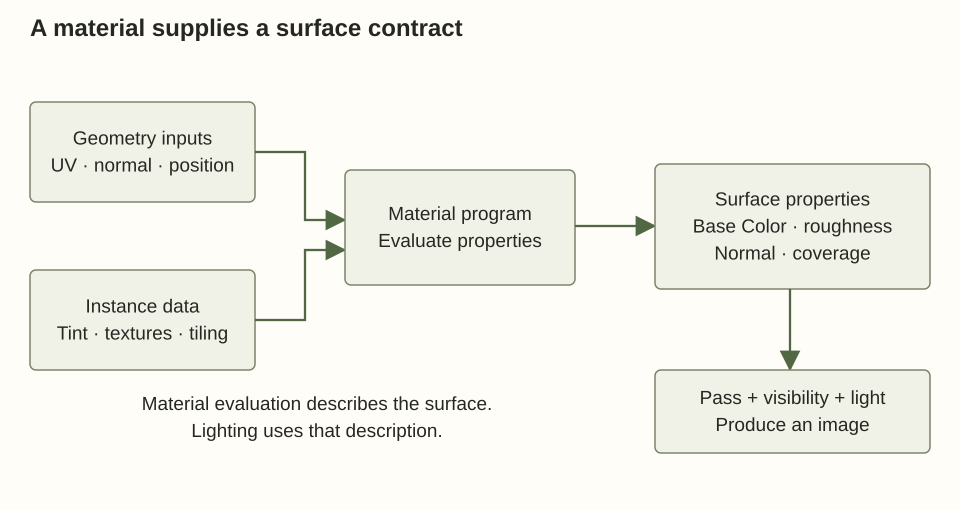
That root-oriented view immediately explains a common observation. A disconnected noise network can occupy half the editor canvas and contribute nothing to the compiled surface. The compiler follows dependencies from outputs that are actually requested. Conversely, a visually tiny connection into World Position Offset can require work for every affected vertex and can change culling, shadowing, and motion. Canvas area is not execution cost. A wire's destination is part of its meaning.
We can write the example as an original, simplified equation: BaseColor = ColorTexture(UV0 × Tiling).rgb × Tint, Normal = DecodeNormal(NormalTexture(UV0 × Tiling)), and Roughness = UseWetLayer ? WetRoughness : DryRoughness. This is a description of the authored computation, not literal generated Unreal HLSL. It omits color-space handling, texture sampling modes, coordinate bases, platform precision, and the surrounding shader. Those omissions will become explicit inputs to the later stages rather than mysterious work performed by the graph itself.
The editor graph is an authoring representation
Start with what is saved in the asset. A material is a UObject-backed asset containing settings and expression data. The expression nodes refer to their inputs; those input references identify other expressions and selected outputs. The graph editor draws that structure in a way a person can manipulate. Moving a node changes its presentation. Connecting a new input changes the program. At runtime, the GPU does not walk these UObjects or read the positions of boxes on the canvas.
For our graph, the Multiply node has two dependencies. One is the result of a texture sample; the other is the tint parameter. Asking for its output recursively asks for both inputs. In the legacy compiler path, UMaterialExpressionMultiply::Compile gets the connected inputs, falls back to constants for unconnected ones, and calls Compiler->Mul. The node delegates arithmetic generation to an interface rather than assembling a complete shader itself. A node for a texture sample delegates a different operation with more information: texture type, coordinates, sampling mode, and relevant options. MaterialExpressions.cpp: Multiply delegates to the compiler MaterialExpressions.cpp: texture sampling has a richer input contract
The useful abstract structure is a directed dependency graph. A texture sample may feed several outputs. Its shared result does not need to be copied into several unrelated authored nodes. A legal graph must eventually bottom out in inputs, parameters, resources, or constants; an expression cannot recursively require itself forever. Unreal's legacy translator detects reentrant expression evaluation while also keeping a map of results that have already been translated. The same source code shows that sharing has context: shader frequency, function state, attribute information, and particular node semantics influence whether a prior result can be reused. HLSLMaterialTranslator.cpp: dependency traversal and cached results
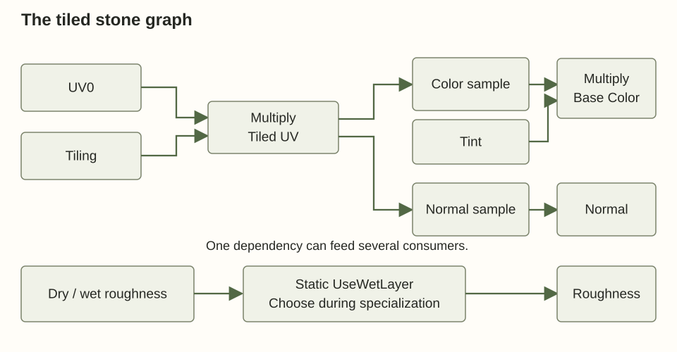
A material function packages part of this dependency graph behind named inputs and outputs. A function could calculate the wet roughness from a mask and two parameters. Calling that function is useful for authoring consistency, but it is not a promise of a GPU function-call instruction. The compiler can specialize, inline, share, or optimize the resulting computation. Nor does a material function create an independently assignable surface: the calling material still determines the domain, relevant output properties, and eventual rendering use.
Material instances solve a different problem. Suppose a courtyard contains gray, reddish, and dark stone using the same texture pattern. Duplicating the graph three times would create three maintenance points. Instead, expose Tint, Tiling, the textures, and roughness as parameters, then create instances that override values. A material instance inherits a graph and settings through a parent relationship; it does not let the artist freely redraw the inherited graph. Parameter identity includes information such as the name and association, which matters when functions and material layers expose parameters with similar names.
A dynamic material instance allows supported parameter values to change during play. If rain darkens the courtyard, game code can update a scalar or vector parameter on that instance. The resulting visible change does not imply that a shader compiler just ran. The graph already contains a load of the parameter. Updating the data supplied to that load changes the image. This is the central distinction between changing a program and changing its inputs.
Static parameters complicate the convenient phrase “instances do not recompile.” A conventional static switch is resolved while specializing the material. An instance with UseWetLayer = false may require a different shader map from one with it true. A tint override usually does not. Epic's Material Instances documentation distinguishes ordinary parameter overrides from static combinations. In this checkout, the static-switch expression also has an explicitly separate dynamic-branch mode; we will keep that mode separate from the compile-time switch used in this example. MaterialExpressions.cpp: static selection and optional dynamic-branch mode
The distinction is easier to remember as an ownership boundary. The graph owns the available computation. A compiled specialization owns the executable choices already made. An instance owns values and resource selections compatible with that specialization. A mesh section refers to a material interface, while the renderer later resolves the rendering resource and parameter data. There may be thousands of visible objects and many instances while only a much smaller number of compiled shader variants exist.
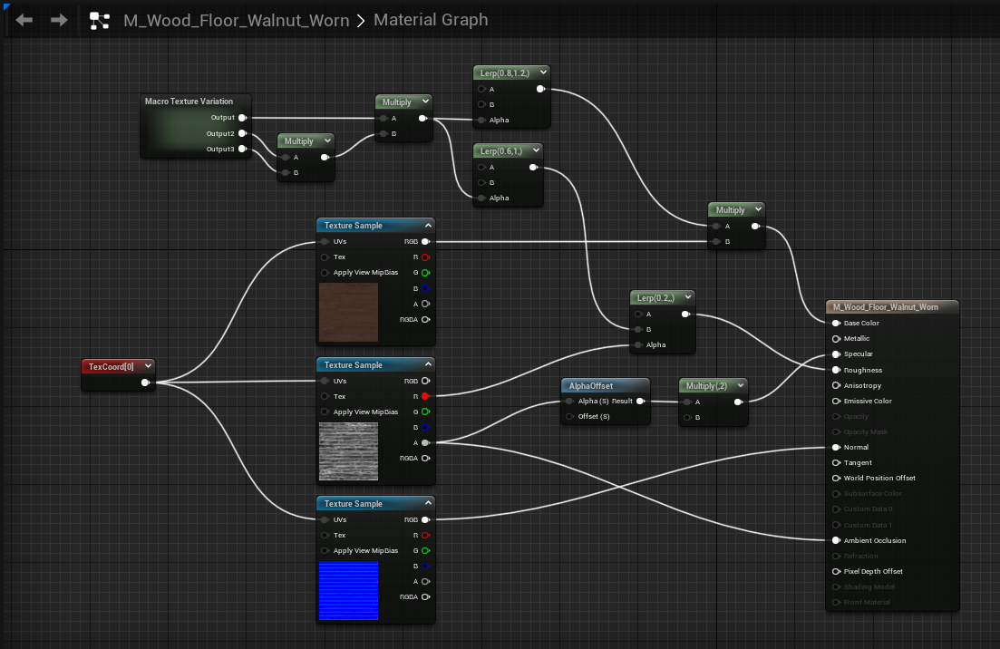
Before generating instructions, decide what each value means
The wire leaving Tiling contains a scalar. The wire leaving UV0 contains two numbers. The color sample produces several channels, while Base Color wants a color-sized value. A compiler must make these relationships explicit. A scalar multiplied by a two-component vector can be replicated across the components. A component mask can select RGB from a four-channel sample. A texture object, however, is not a numeric vector that can be sensibly added to a normal. Graph convenience does not remove the need for a type system.
Unreal's legacy material compiler represents expression results using code-chunk indices, and the translator tracks material value types for those chunks. The compiler interface exposes operations such as multiplication and casts without forcing every expression class to understand the generated source layout. The translator supplies coercion rules and errors when an operation is invalid. This distinction matters when extending the engine: an expression node declares an operation in the material language; the backend determines how that operation becomes code for a concrete target. MaterialCompiler.h: property context and compiler operations HLSLMaterialTranslator.cpp: typed code chunks
Type is only one dimension. A value also has an evaluation context. UV coordinates can exist at mesh vertices, then be interpolated across triangles. A pixel's screen position exists only in an appropriate screen-space evaluation. World Position Offset asks for a displacement before rasterization. Roughness normally asks for a surface property at the shading sample. Feeding an operation into a different property can therefore change its frequency or expose that its inputs are unavailable at that stage.
In Unreal source, the material resource sets the requested material property and shader frequency before compiling it. The interface also carries a previous-frame-time choice. Those are not decorative flags. They affect how expressions involving time, position, or stage-specific operations are interpreted. A single authored graph may be traversed more than once under different contexts because the renderer needs current vertex displacement, previous displacement for motion, and pixel shading inputs. The compiler cannot safely reuse every result solely because it originated from the same box in the editor. Material.cpp: setting property, shader frequency, and previous time
Consider moving UV0 × Tiling into Customized UVs. Multiplication by a uniform scale is linear, so interpolating the scaled vertex coordinates gives the same ideal mathematical result as scaling the interpolated coordinates. This can move some work from pixels to vertices. Now replace that expression with sin(UV0 × Tiling). The interpolation of sine values at triangle vertices is generally not the sine of the interpolated coordinates. The result depends on triangle density and can visibly change. Moving work between stages is therefore a transformation with correctness conditions, not a universal optimization checkbox.
Texture sampling makes the context more demanding. A pixel shader commonly estimates how quickly coordinates change across neighboring samples and uses those derivatives to choose a mip level. A vertex shader does not possess the same ordinary pixel-quad derivative context. A ray hit or a Nanite material evaluation can require a different way to recover a suitable footprint. The material language and generated helpers must preserve the information required by the selected sampling mode. “Sample this texture” is not a complete specification until the compiler knows coordinates, sampler behavior, and how the texture footprint will be determined.
Normals illustrate a semantic type that a plain float3 cannot fully express. The normal texture stores a direction in tangent space. Lighting may require a world-space direction. The mesh supplies a basis connecting those spaces, and the shader transforms and normalizes the result. If a graph outputs a world-space normal while the material expects tangent-space normals, the numeric component count is valid and the image can still be wrong. The material setting and the meaning of the expression must agree. Unreal's template contains distinct helpers for obtaining the raw material normal and producing the normal used by the surrounding shader. MaterialTemplate.ush: normal interpretation
For the stone graph, this gives a precise list of requirements: UV0 and tangent-basis data from geometry; a scalar tiling value; compatible color and normal textures with samplers; a tint vector; scalar roughness values; and a compile-time wetness choice. No light list is required to compute these surface properties. No actor pointer is required either. By expressing the requirements in this form, the compiler can later combine the material with a vertex factory and a pass without teaching the graph about every mesh class or every lighting algorithm.
Follow the actual translation path in this Unreal version
There are two different meanings of “compile a material” that are often compressed into one arrow. First, Unreal translates its material language into shader source plus metadata. Second, a platform shader compiler turns the resulting shader program into a backend representation. The first step understands material properties, parameters, graph nodes, and uniform expressions. The second understands HLSL and the target shader platform. A failure at one layer is not automatically evidence of a bug in the other.
The entry point worth following in this checkout is FMaterial::Translate. It inspects the shader-map identity's bUsingNewHLSLGenerator flag and restrictive-material mode, then chooses either Translate_New or Translate_Legacy. These are alternative translation routes. They are not consecutive stages through which every material passes. The switch is visible in a compact stretch of source, making it a better starting point than trying to infer the pipeline from filenames containing “HLSL.” MaterialShared.cpp: selecting a translator
The legacy route constructs FHLSLMaterialTranslator, asks it to translate, gathers the resulting compilation information, and places the generated material shader text into a virtual include map. The include name is /Engine/Generated/Material.ush. A virtual include is source supplied by the compiler environment under a path-like key; it need not be an ordinary file stored at that location in the project. The route also has a translation-cache retry path, which is another reason not to equate every material compilation request with a fresh recursive walk of every expression. MaterialShared.cpp: the legacy translation boundary
Within that translator, graph nodes call the FMaterialCompiler operations introduced earlier. The translator records typed code chunks and uniform-expression information, tracks dependencies, and supplies the requested material properties. A multiply can become an arithmetic chunk, a folded constant, or an operation on uniform expressions depending on its inputs. Common work may be reused through expression-result maps and chunk handling. These mechanisms are more specific than a sweeping claim that “the graph is optimized”: which expressions can share work depends on context, and later HLSL compilation performs further optimization.
The new route in this checkout explicitly builds an FMaterialIRModule using FMaterialIRModuleBuilder, then runs FMaterialIRToHLSLTranslation. IR means intermediate representation: a program structure designed for analysis and transformation between the user-facing graph and emitted HLSL. The builder receives material, platform, feature-level, quality-level, blend-mode, static-parameter, and preview-expression information. The translator produces template parameters and a compiler environment; the template resolver emits the material source placed under the same generated include name. MaterialShared.cpp: material IR construction and HLSL emission
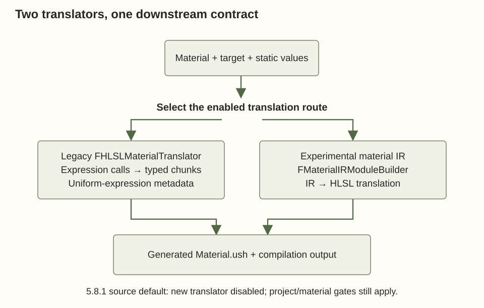
The configuration is just as important as the class names. Here, r.Material.Translator.EnableNew is declared with a default of false. UMaterialInterface::IsUsingNewHLSLGenerator also checks restrictive mode and the base material's bEnableNewHLSLGenerator flag. A console-variable declaration establishes the source default, not the effective settings of every editor or cooked project. A project can override configuration, and the per-material flag still matters. This article therefore explains the legacy route concretely and treats the IR route as a separately selectable implementation in the inspected revision. MaterialShared.cpp: new-translator default MaterialInterface.cpp: effective selection gates
Older engine articles may instead discuss a material HLSL tree and classes associated with that generation of implementation. The architectural lesson survives: the authoring graph needs a compiler-friendly representation before it can become complete shader programs. The precise class sequence does not survive automatically. When debugging another release, begin at its dispatch point, identify the active path, and inspect the inputs and outputs at that boundary. Following a remembered class diagram can otherwise lead to setting breakpoints in code that the material never executes.
Both current routes are responsible for more than source text. The renderer needs to know what uniform data exists, what resources are referenced, which features are used, and which shaders should be requested. A compiler that emitted an HLSL string while discarding this metadata would force the runtime to rediscover its interface later. Unreal instead carries compilation output alongside the text. That pairing is the foundation for the binding and cache behavior we will follow next.
Separate work that changes per material from work that changes per sample
At one instant, the stone's Tint parameter is identical at every pixel using that material instance. The sampled color is not. If an artist defines AdjustedTint = Tint × Brightness, both operands can be uniform for that material evaluation, so calculating the product independently for millions of pixels would be unnecessary. The compiler can arrange for the product to be evaluated with the material's parameter data and place the result in a uniform buffer. The pixel shader then combines that uniform result with the varying texture sample.
The word uniform describes what varies across an evaluation, not whether a value can ever change. Tint can change next frame and still be uniform for all samples sharing the same material binding now. A compile-time constant is known while the program is being specialized. A uniform parameter is supplied at runtime but shared across the relevant invocation group. A varying input changes across vertices, pixels, or other material evaluations. Confusing these categories produces both wrong expectations about recompilation and poor shader organization.
Unreal represents uniform expressions as part of material compilation output. It can encode operations on their values in preshader data. A preshader here is an engine-side evaluation program used to produce material uniform values; it is not simply “another vertex shader” and should not be assumed to be a separate GPU dispatch. In the inspected source, the uniform-buffer fill path evaluates preshader data through the material render context and writes results into the parameter buffer. The render proxy caches uniform-expression results associated with the applicable shader map. MaterialUniformExpressions.cpp: uniform-buffer filling and preshader evaluation MaterialRenderProxy.cpp: evaluating against the rendering shader map
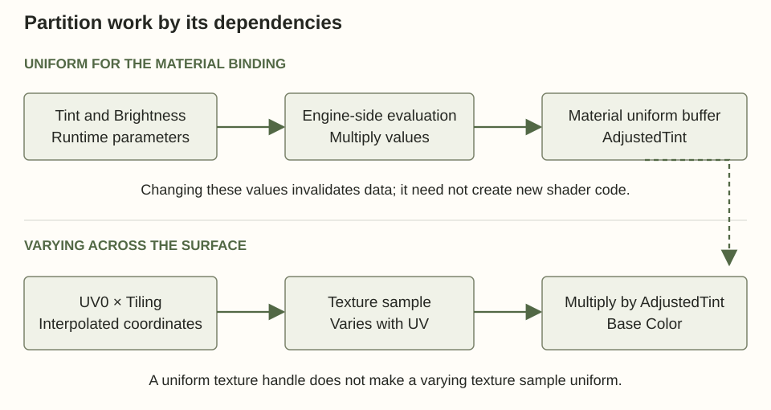
Return to the graph. Tint × Brightness depends only on the instance values, so it is a candidate for uniform evaluation. UV0 × Tiling depends on UV0, so the final product varies over the surface even though Tiling itself is uniform. The texture handle is a uniform resource choice, while the texture sample result varies with coordinates and texture contents. Calling a texture parameter “uniform” does not mean the compiler can sample the texture once for the entire object.
Suppose Tint is (0.8, 0.5, 0.3) and Brightness is 0.75. The uniform product is (0.6, 0.375, 0.225). A pixel sampling (0.5, 0.6, 0.7) then produces Base Color (0.3, 0.225, 0.1575) before any relevant clamping or later shading. If Brightness changes to 0.5, the preshader result changes, but the texture sample operation and multiplication in the compiled shader can remain the same program. This small numeric example captures the large-scale benefit: move a reusable calculation to the least frequently changing context that still gives the correct result.
“Least frequently changing” should not be interpreted as “once when the asset is loaded.” Uniform data can be invalidated by parameter changes, resource changes, time-dependent requirements, or shader-map changes. Unreal has explicit paths for caching, invalidating, and updating uniform expressions. Some updates can be scheduled through task-based work. The correct performance question is how often a given material's cache becomes invalid and how much work rebuilding it requires, rather than whether the material happens to contain a preshader.
Parameter collections provide another sharing scope. If every stone material in the world needs the current rain amount, copying a value into thousands of separately managed instances is a different update strategy from referencing a common parameter collection. Per-instance custom data supplies yet another scope: values can differ between geometric instances even when they share a material. These choices affect data traffic, draw grouping, and shader access. They should be selected according to who owns the value and how often it changes, not simply by choosing the first node that produces a scalar.
Custom HLSL deserves caution at this boundary. Unreal can inspect the semantics of its built-in material expressions when deciding what belongs in uniform evaluation. An arbitrary Custom expression can obscure that structure from the material translator. The downstream HLSL compiler may still optimize ordinary constant arithmetic, but that is not the same as recovering Unreal's engine-side preshader partition. A hand-written Tint × Brightness inside a large Custom block can therefore lose a useful material-language optimization even if the resulting HLSL looks compact. Epic's Custom Material Expressions documentation calls out this distinction through its warnings about uniform expression folding.
The practical habit is to keep uniform parameter preparation visible to the material system when possible. Use a Custom expression for functionality that warrants it, give it explicit typed inputs, and inspect the generated code rather than assuming that hand-written HLSL is intrinsically closer to optimal machine instructions. Source-level brevity, number of graph nodes, preshader cost, and repeated GPU cost are related measurements, but none is a substitute for the others.
A generated material function is only one part of a complete shader
We now have the material's computation and the metadata describing its interface. We still do not have a shader that can draw a triangle. Something must load vertex attributes, transform positions, construct the interpolated material inputs, call the material functions, and write the render pass's outputs. The material graph does not contain those instructions because it is designed to work with many geometry representations and several rendering passes.
Unreal's material template supplies a stable surrounding vocabulary. MaterialTemplate.ush contains structures and helpers used by generated material code, including functions that compute pixel material inputs and retrieve particular properties. The translator resolves template parameters and supplies the resulting text as /Engine/Generated/Material.ush. A pass shader includes that generated material implementation together with engine shader code. The virtual include lets many pass-specific compile jobs share the material's generated source without requiring the artist to author a complete vertex shader and pixel shader pair for each use. MaterialTemplate.ush: pixel material evaluation HLSLMaterialTranslator.cpp: resolving the material template
A vertex factory supplies the geometry-facing side of the contract. The word “factory” can sound like an asset-creation tool, but here it identifies the shader-side and CPU-side machinery that presents vertex data in the form the renderer expects. Static meshes and skinned meshes do not fetch or produce their positions in the same way. Their material programs can nevertheless both ask for texture coordinates, tangent information, and position. A vertex factory makes that request meaningful for a particular geometry path.
The pass supplies the destination. A base pass needs the material properties required for surface shading and the relevant render targets. A depth pass may need only position and coverage. A shadow pass needs coverage from the light's view. A velocity pass needs current and previous positions. The material translator and shader compilation environment make relevant material features available, while pass code determines how the evaluation is used. This is why a material with World Position Offset or an opacity mask can affect passes that never display its Base Color.
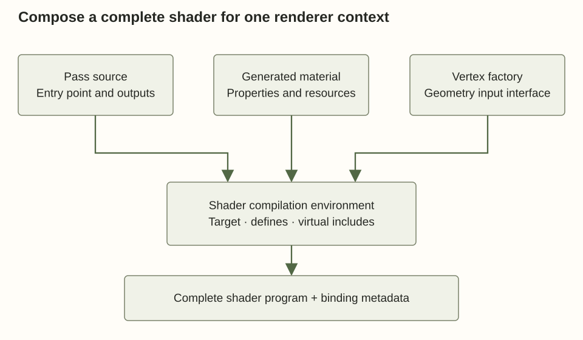
In the conventional base-pass pixel shader, source code calls the material-parameter calculation, then retrieves values such as Base Color from the resulting pixel-material inputs. The renderer's implementation continues from there into its selected shading and output path. This is a much more precise statement than “Unreal converts the graph into the pixel shader”: the material becomes code inside a larger program whose entry point and outputs belong to the pass. BasePassPixelShader.usf: evaluating and reading material inputs
An original schematic example makes the composition visible. Imagine a shader performing attributes = geometry.fetch(vertex), position = geometry.transform(attributes.position), and later surface = material.evaluate(interpolatedAttributes, materialParameters). A base pass might encode surface into deferred buffers, while another pass could consume only material.coverage(...). These are explanatory function names, not Unreal entry points. Their purpose is to show why the material interface can remain stable while geometry and pass implementations change.
Some of the outputs are known to be irrelevant for a specialization. An opaque depth-only case need not perform all the texture reads used by the final color surface. A masked depth case may still need a mask texture. An offset vertex may still need its displacement inputs. Graph reachability, specialization, and the downstream optimizer cooperate to remove unused work. The result depends on the actual shader request; a material's full generated include does not prove that every line executes in every shader using it.
This is also the point where resource interface correctness becomes non-negotiable. If the material expects a normal texture and a packed parameter buffer, the emitted shader declarations, reflection information, and runtime bindings must agree on their layout and types. The engine's shared compiler environment records definitions and generated includes; backend compilation derives binding information that the C++ shader classes use. A mismatched layout is not merely a visually unusual material. It can make the shader read the wrong bytes or bind an incompatible resource.
For an extensible engine, the useful abstraction is therefore three cooperating contracts: geometry supplies material inputs; the material supplies properties and resource requirements; the pass decides which outputs it consumes. Unreal's implementation has substantial specialized code around those contracts, especially for modern rendering paths, but the separation explains how a material graph avoids embedding every geometry loader and every render pass in its node language.
One graph becomes a family of specialized programs
A compiled shader is a program for a particular target and context. The stone graph can be used on a static mesh or a skeletal mesh, rendered in a base pass or a shadow pass, built for different platforms, and specialized with or without the wet layer. It is tempting to count every combination and declare that Unreal must compile all of them. That would overstate the problem. The engine has eligibility tests that reject irrelevant combinations. Nevertheless, every new independent specialization dimension has the potential to multiply the work that remains.
Unreal distinguishes material shader types from mesh material shader types. A material shader type depends on material characteristics. A mesh material shader type additionally involves a vertex-factory type because its geometry-facing interface is part of the shader's specialization. The material shader-map construction examines these types and uses ShouldCompilePermutation decisions to determine which combinations are applicable. The vertex factory, material, platform, shader type, and permutation flags all contribute to this filtering. MaterialShader.cpp: material and mesh-material eligibility
In the example, a conventional static UseWetLayer switch can eliminate one branch before runtime. The dry specialization does not need to dynamically ask whether wetness is enabled. If the wet branch alone references a puddle-mask texture, the dry specialization may avoid that resource and its computations. The cost is a second specialization for material instances using the other choice. A runtime scalar WetAmount instead keeps the arithmetic capable of handling several values and changes the supplied data.
These are different design decisions. If the wet surface requires a large optional feature that never changes during gameplay for a particular asset, compile-time specialization can be reasonable. If rain smoothly changes wetness every frame, a runtime parameter is the natural input. It is possible to combine them: a static feature switch chooses whether the material supports the wet-layer implementation, while a dynamic amount controls its current strength for the variants that include it. This avoids treating every animation value as a shader permutation.
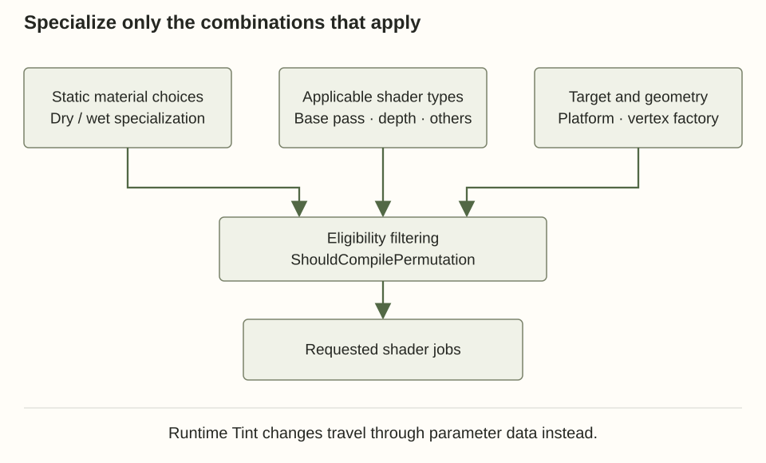
As a planning example, four independent Boolean static features have sixteen possible settings. If a project uses only three settings, those three are the relevant starting set; it does not follow that all sixteen must be cooked. Each retained setting can then require several pass shaders and geometry variants. Adding another Boolean doubles the theoretical feature space to thirty-two. This arithmetic is a design warning, not an exact shader count: output-equivalent code can be shared or deduplicated at later layers, and engine filters and target configurations determine which jobs really exist.
Uniform branching is a third case, distinct from both compile-time removal and per-pixel divergence. If a runtime condition is uniform for a draw, neighboring invocations can agree on the path. That can be more coherent than a condition based on a texture mask. It still does not guarantee that both sides disappear from the compiled program, or that a conditional node forces a particular machine branch. The material translator, generated HLSL, compiler heuristics, and target architecture determine the implementation. In this 5.8.1 source, the static-switch expression has a DynamicBranch mode with a distinct code path, so a node's name alone is insufficient evidence that it performed compile-time selection. MaterialExpressions.cpp: two switch behaviors
Parameter changes also have different invalidation scopes. Editing Tint should normally require parameter-data work. Changing a static feature can require another shader map. Changing a material function used by many parents can invalidate many generated programs. Changing a common shader include can affect a still wider set of shader types and materials. Long “Compiling Shaders” waits are often a fan-out problem: a small authored edit touches a dependency used by many specializations.
Usage flags and shader-type filters are therefore part of material architecture. A universal master material that claims every geometry usage and exposes many static switches can be convenient for one artist and expensive for the project. Several deliberately scoped parent materials can be easier to cook, debug, and profile. The tradeoff should be based on measured variant usage and maintenance needs. A single graph is not automatically a simpler system once its compiled family is counted.
The correct unit of reasoning is the specialized interface: which outputs it computes, which geometry interface it expects, which resources it binds, and which target can execute it. The next stage gives that specialized family an identity and makes it reusable across editor sessions and machines.
Give compiled work an identity before doing it again
When the editor opens the stone material, the graph does not necessarily cause all of its shaders to compile. Unreal can find already available work. That reuse requires an identity more precise than the material asset's name. Two assets with different names may generate equivalent code, while one asset with the same name may have changed a static parameter, shader dependency, or target configuration. A cache key must describe the inputs that matter to the cached result.
A material shader map organizes the shaders associated with a material specialization and platform. It is not a GPU texture, and the word “map” does not mean a color image. It is a collection and lookup structure connecting shader types and relevant specializations to compiled shader objects. The material resource can hold or obtain the shader map appropriate for its feature and quality context. The renderer later asks this structure for the concrete shader needed by a pass.
FMaterialShaderMapId contributes identity information for that compiled result. In the inspected source, hashing includes dependencies such as referenced material functions, parameter collections, vertex-factory source information, texture references, expression includes, base-property overrides, the new-generator choice, external code references, and Substrate compilation configuration. Other parts of the key include platform and shader-map information. The point is not to memorize every member. It is to see why changing a compiler route or a shader dependency must not accidentally reuse an incompatible old binary. MaterialShader.cpp: shader-map identity dependencies
The Derived Data Cache, usually shortened to DDC, stores results that can be rebuilt from source data and configuration. Material shader maps have explicit load and save paths through this cache. On a successful hit, expensive work can be avoided. On a miss, the engine must build the needed result and can store it for reuse. The cache can have different configured storage layers, but those storage choices do not change the logical requirement: a key must refer to compatible derived data. MaterialShader.cpp: loading derived shader-map data MaterialShader.cpp: storing derived shader-map data
Several caches coexist. The legacy material translator itself has a DDC interaction, so translated material output can be reused independently of later backend shader compilation. The shader compilation machinery has job-level reuse. Shader code can be shared or deduplicated in output packaging. Runtime pipeline creation has yet another cache, which we will separate later. Saying “the shader cache is warm” without specifying which layer is warm hides the failure one is trying to diagnose.
Suppose only Tint changes on a dynamic instance. The graph and its specialization remain the same, so requesting a new material shader-map identity for every color would squander the entire architecture. Suppose UseWetLayer changes instead. The set of expressions and resources can change, so a different specialization identity is appropriate. Suppose a developer fixes the tangent-space transformation helper in an included shader file. Even with the material asset untouched, the resulting shader program has changed, so source dependency tracking must invalidate affected compiled work.
Cooking puts these distinctions into a shipping workflow. A cook determines the target-platform material and shader requirements, prepares and serializes the needed results, and packages shader code through the project's chosen shader-library and build configuration. A normal cooked game should not require the end user's machine to walk editor material-expression UObjects and compile the entire graph language on demand. It still needs to create or obtain backend runtime objects and bind parameters, which is why a cooked shader does not guarantee a hitch-free first draw.
Asynchronous behavior also means that “the material asset exists” and “its desired rendering shader map is ready” are different states. During editing, a requested update can be pending while a usable previous or fallback rendering path remains available. The engine must associate completed results with the correct outstanding material request; an older job cannot safely overwrite a newer edit merely because it finishes later. The shader-map identity and compilation bookkeeping provide the information needed to make such transitions coherent.
For the stone material, the ideal repeated workflow is simple: a graph edit creates a new program identity and schedules missing work; another editor using compatible inputs can reuse cached results; a tint animation updates data; and a packaged build contains the necessary compiled shader family. This is not just an optimization. It is the separation that lets authoring remain interactive while the renderer consumes stable, explicitly identified programs.
Compile complete shader jobs without blocking the whole editor
Once the material translator has supplied code and metadata, Unreal can create shader compile jobs for the relevant types and permutations. A job identifies a source entry point, stage, target platform, generated include contents, definitions, and other compiler settings. The material environment is shared where appropriate so that hundreds of pass variants need not each independently rediscover the graph's meaning. The entry point FMaterial::BeginCompileShaderMap visibly translates the material before arranging the shader-map compilation work. MaterialShared.cpp: translation before shader-map compilation
The shader compiling manager receives jobs, manages their priority and reuse, and gathers completed results. ShaderCompileWorker is a separate worker program used by Unreal's shader compilation system. Work can be carried out by local workers or through configured distributed backends. The worker boundary isolates expensive compiler activity from the main editing loop; it does not change the source-level meaning of the graph. More worker processes increase concurrency only while CPU, memory, storage, and the compiler backend allow it. A large compilation can be limited by memory or shared resources rather than by the nominal number of processor cores. ShaderCompiler.cpp: submitting shader work ShaderCompiler.cpp: worker executable selection
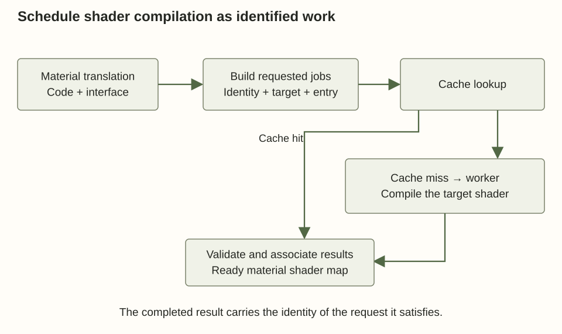
Platform compilation is another branch, not one universal backend. For a relevant Direct3D shader model, the Windows shader-format implementation selects the DXC compilation path; other supported model paths exist in the same implementation. The Vulkan path shown in this checkout uses ShaderConductor and DXC for regular shaders and serializes SPIR-V together with the binding-related data expected by that backend. Saying “Unreal compiles HLSL” is accurate at the input-language level but incomplete about what the worker returns. D3DShaderCompiler.cpp: shader-model-dependent backend selection VulkanShaderCompiler.cpp: DXC-based compilation and SPIR-V output
The backend may preprocess includes, parse resource parameters, optimize arithmetic, eliminate unused work, produce target code, and return reflection or binding metadata. Unreal needs the compiled program and enough interface information to connect it to engine resources. A shader that loads material parameters from one layout cannot be paired with a render proxy holding a different layout merely because both were produced from an asset called M_Stone. The identity and interface checks established earlier remain relevant after backend compilation.
Failures occur at different boundaries. A missing material input or unsupported graph operation can be diagnosed while translating expressions. Invalid custom HLSL can survive graph validation and fail in the platform compiler. A resource-layout issue can arise while parsing or validating compiler output. A shader can compile correctly but be inappropriate for a pass because a permutation was selected incorrectly. The quickest debugging route is to identify the failed boundary before editing the graph. Rewriting unrelated material nodes is unlikely to fix a worker executable problem or an incorrect target-platform environment.
Completed jobs do not immediately become arbitrary mutable state visible to every rendering thread. The manager processes asynchronous results and associates them with material shader-map compilation. Render-facing resources must be updated coherently. Imagine typing three graph edits in quick succession: job A represents the original wet mask, B changes its texture, and C removes the wet layer. Even if A finishes last, C is still the intended material. Compilation identifiers and completion handling prevent “last worker to finish wins” from being the semantic rule. ShaderCompiler.cpp: processing asynchronous results
This machinery explains why editor responsiveness and shader readiness are separate measurements. The editor can accept input while compilation is pending. The preview may show a prior or fallback result until the correct shaders are available. Applying a material can request more contexts than the preview sphere needed, so a graph that appeared ready in one viewport can trigger additional work when assigned to another geometry type or cooked for another platform.
For the example, it is useful to inspect one deliberately small change. Change a literal in the graph and observe which compilation work is requested. Then change Tint through a dynamic material instance and observe that the shader program need not change. Finally, enable a genuinely static wet-layer variant and observe the new specialization. These three operations exercise source recompilation, parameter update, and specialization creation separately. They make shader compilation less mysterious because each delay can be tied to a distinct kind of input change.
Turn the compiled interface into a draw-time binding
A cooked or editor-ready shader map is still not the act of rendering. At runtime, a mesh section refers to a material interface. The renderer obtains an appropriate material render proxy, resolves the rendering material resource and shader map, selects the shader needed by the pass and geometry path, and assembles resource bindings. The render proxy exists because the rendering side needs stable access to material values and resources without repeatedly traversing mutable gameplay-facing asset state.
This is where the instance distinction becomes tangible. Several stone objects can use the same compiled shader while supplying different Tint values or texture resources. The shader map answers “which executable implementation?” The render proxy and uniform-expression cache answer “which values and resources for this material use?” Combining those identities too early would turn every visual variation into a new program. Separating them allows program sharing without forcing all instances to look the same.
Here is an original C++ usage example for the running material. Assume StoneMesh is a valid mesh component whose material slot zero already contains the parameterized stone material. Run the setup on the game thread and retain the returned dynamic instance in an appropriate UObject-owned field if gameplay will update it later. The parameter names must match those authored in the graph.
// Original usage example: change inputs to an already authored program.
UMaterialInstanceDynamic* StoneMID =
StoneMesh->CreateDynamicMaterialInstance(0);
if (StoneMID)
{
StoneMID->SetScalarParameterValue(TEXT("Tiling"), 4.0f);
StoneMID->SetVectorParameterValue(
TEXT("Tint"), FLinearColor(0.8f, 0.5f, 0.3f, 1.0f));
StoneMID->SetScalarParameterValue(TEXT("Roughness"), 0.65f);
}This example changes ordinary runtime parameters. It does not set the conventional static UseWetLayer specialization. A later rain animation can update a dynamic amount exposed in the wet-capable graph, while choosing the compiled wet-capable variant remains a separate decision.
When game code changes a supported parameter on a material instance, the inspected GameThread_UpdateMIParameter path copies the parameter's identifying information and value into an enqueued render command. The rendering-side proxy updates the parameter and recaches uniform expressions. The source also contains related invalidation work for renderers whose accumulated output depends on material values. The important ownership rule is visible in the code: a game-thread update is handed to the render-facing representation through an explicit command, not through an unsynchronized write into an arbitrary GPU buffer. MaterialInstance.cpp: game-thread parameter handoff
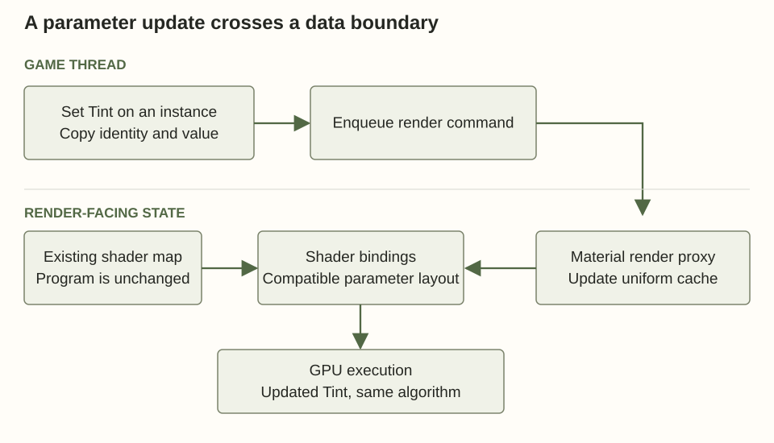
The material shader's C++ implementation uses the compiler's parameter map to bind its material uniform-buffer parameters. At draw-command construction, FMaterialShader::GetShaderBindings retrieves the render proxy's uniform-expression cache and adds the corresponding buffers to the shader bindings. Mesh material shaders extend this with the geometry-specific binding work. The same code contains consistency checks comparing uniform-expression information and shader-map state. These checks are a concrete expression of the compiler/runtime contract: the producer and consumer must agree about the data layout. ShaderBaseClasses.cpp: binding declared material buffers ShaderBaseClasses.cpp: material shader bindings
What is inside a uniform buffer is more structured than a dictionary of arbitrary strings. The compiler determines a layout for scalar and vector results and the accompanying resource bindings. Runtime lookup can use parameter names and associations to update the relevant values, but GPU execution uses the compiled interface and bound buffers or descriptors. Shader code does not repeatedly search the UObject graph for an expression named Tint every time it shades a pixel.
The Rendering Hardware Interface, or RHI, is Unreal's abstraction over backend graphics APIs. It expresses resources, pipeline state, command submission, and synchronization in engine-facing terms. Ultimately, the chosen backend binds shader programs, buffers, textures, and samplers using its API-specific mechanisms. “The material is on the GPU” is therefore shorthand for a collection of things: executable shader code, material uniform data, texture resources, geometry data, and the commands that connect them for a particular draw or dispatch.
Updating a texture parameter replaces a resource choice, not the texture-sampling algorithm in the shader, provided the replacement satisfies the compiled resource contract. Replacing a compatible two-dimensional color texture can reuse the same shader. Replacing the operation with a virtual-texture sampling path or changing assumptions that affect resource types can require a different compiled interface. The boundary is compatibility of program and layout, not whether both editor widgets happen to show an image thumbnail.
Sharing a shader also does not guarantee that two objects can merge into one draw. Compatible shader programs are only part of draw-state equivalence. Material resource bindings, vertex/index data, pass state, instance data, and engine batching rules all matter. A thousand dynamic instances with unique uniform buffers may share code but still create management or binding overhead. A design that stores suitable per-instance variation in an instance-data stream can have a different cost profile. Neither approach is universally best; the correct representation follows the lifetime and sharing pattern of the data.
The stone example has now crossed the authoring/runtime boundary completely. The graph determined the program and interface. Compilation made executable variants. The material instance supplies values. The render proxy exposes coherent rendering data. The pass combines it with geometry and submits work. The next subtlety is that a compiled shader program still does not uniquely identify the complete pipeline object used by the graphics API.
A shader cache and a pipeline-state cache solve different delays
Suppose the stone's vertex and pixel shaders are already compiled, yet the first frame that displays a particular use of the material stutters. It is tempting to conclude that the shader cache failed. On modern graphics APIs, creating the executable pipeline can itself require work after shader bytecode is available. A Pipeline State Object, or PSO, combines shader stages with other state needed for execution. For a graphics pipeline, this can include the vertex declaration, blend behavior, rasterization and depth/stencil state, render-target formats, and related configuration.
Changing a render-target format can therefore require another pipeline object even if the material graph and shader source did not change. Rendering a material with different depth or blend state can also change the relevant pipeline description. A compute pipeline has a different and generally smaller set of state, but its creation remains a separate concept from translating the material graph. The driver can perform target-specific preparation when the application creates the pipeline.
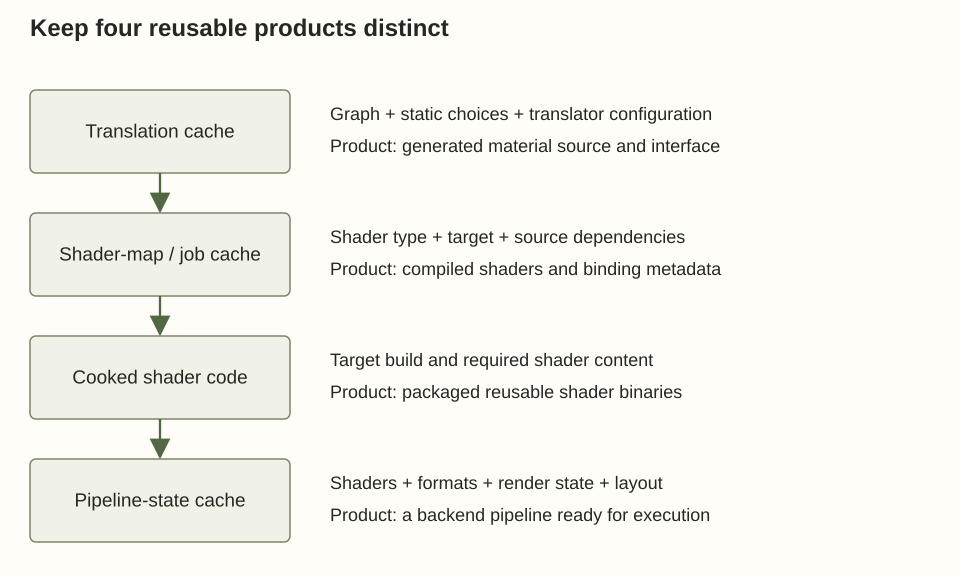
Unreal has both PSO precaching mechanisms and pipeline-cache infrastructure. The public FShaderPipelineCache interface explicitly describes logging, serialization, and precompilation of pipeline-state objects. That name can be misleading if read as “cache of material graph compilation.” Its product is a pipeline state, and its inputs include more than the authored material. Epic's PSO Precaching documentation explains the engine workflow for requesting pipelines before they are needed for visible rendering. ShaderPipelineCache.h: pipeline-state caching responsibilities
The distinction gives a useful diagnostic sequence. If graph editing is slow, inspect material translation and shader compilation. If a cooked build hitches the first time a combination of material, mesh, and pass appears, inspect pipeline creation and PSO coverage as well as streaming. If subsequent frames remain slow, the issue is likely ongoing execution or submission cost rather than solely a cold cache. These categories can overlap, but treating them separately prevents an expensive and ineffective response such as simplifying graph arithmetic to fix a missing precache request.
Precache completeness is necessarily tied to knowledge of future use. A material asset alone may not describe every vertex factory or render-target configuration that will use it. Components and pass processors help identify likely combinations. A dynamically created object or an uncommon render mode can expose a configuration that earlier collection missed. Recorded cache coverage can also depend on the content and settings exercised during collection. A correct cache strategy must be paired with the project's actual runtime behavior.
For the stone surface, ordinary world rendering and a specialized capture could share much of the material computation while requiring different shader types or pipeline state. The presence of the base-pass shader in a cooked shader library does not mean the capture's pipeline is ready. Conversely, once the correct PSO exists, changing Tint through a compatible uniform-buffer update should not require recreating the whole pipeline. This is another reason to keep frequently changing data outside immutable program and pipeline identities.
There is a lifetime issue as well. Cached descriptions, engine shader objects, driver pipeline objects, and bound runtime resources are not all the same allocation. A cache may retain a serializable description without keeping every native pipeline permanently resident. Platform and project policies govern preparation, retention, and memory tradeoffs. Statements such as “precompile everything and keep it forever” ignore the large number of possible variants and the memory consumed by their runtime realizations.
When designing an engine material system, make these cache boundaries visible in both code and telemetry. Report translation misses, backend compilation jobs, shader-map readiness, and PSO creation separately. That makes it possible to explain a delay with evidence. Without those distinctions, a single “shader loading” progress bar becomes a catch-all label for several unrelated kinds of work and makes optimization largely guesswork.
Let deferred shading and Nanite consume the same material meaning
We can finally place the stone into the frame. In a conventional opaque deferred path, geometry is rasterized and the material is evaluated for visible surface samples. Instead of calculating every light immediately in that material evaluation, the base pass writes surface information into buffers that later lighting passes can read. Those buffers are commonly called the GBuffer. Their exact layout depends on renderer configuration and material system. The essential separation is between determining the visible surface's properties and applying later lighting work to those properties.
The graph does not usually become a complete loop over all scene lights. It supplies Base Color, roughness, normal, and other relevant properties. The renderer's lighting implementation interprets those values through the selected shading model. For example, roughness affects the distribution of a specular response; it is not simply multiplied into final brightness. A BRDF, or bidirectional reflectance distribution function, describes how incoming light from one direction contributes to reflected light in another direction at a surface. The graph chooses the inputs to that model rather than manually reproducing every light's contribution.
This separation explains both flexibility and limits. Moving a light can change the final image without recompiling the stone's graph. Changing a shading model or enabling a feature that changes the encoded surface contract can affect shader specialization and buffer interpretation. Translucent surfaces and certain other domains follow different paths because the opaque deferred representation cannot by itself retain all the layers needed for their composition. A graph is always evaluated inside the contract selected by its material settings and the renderer.
Nanite changes how geometry visibility and material work are organized. A useful conceptual model separates visibility determination from later material shading of the visible samples. The exact pipeline has evolved, and the inspected version contains compute-oriented shading-bin construction and shader work organized around those bins. A shading bin groups work requiring a compatible material shading pipeline. The goal is to process material work coherently after determining which surface samples matter, rather than blindly shading every triangle submitted by an object-oriented scene traversal. NaniteShading.cpp: building material shading bins
There is also material work that cannot wait until after visibility. World Position Offset can change where geometry lands. An opacity mask can decide whether a covered sample exists. Nanite's programmable rasterization machinery handles relevant material-dependent raster behavior, with raster bins organizing those requirements. A raster bin and a shading bin are different groupings because visibility-affecting work and final surface-property evaluation have different needs. The source contains separate raster-bin and shading-bin implementations, making the distinction concrete. NaniteCullRaster.cpp: raster-bin construction
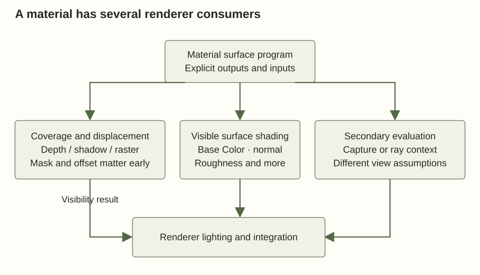
For the stone graph without displacement or masking, the color and normal textures primarily affect its shaded appearance. Add an animated offset and the material now participates in geometry motion as well. Add a cutout mask and it participates in coverage. The expensive feature is not identified merely by its node count: an operation used while establishing visibility has different scheduling and repetition from one used only for the visible shaded surface. This is why material profiling in Nanite must distinguish programmable raster cost from material shading cost.
Substrate changes the representation of surface scattering and how it is compiled and stored. It can express combinations of scattering closures and layered material behavior beyond a single conventional shading-model parameter set. A closure is a compact description of a scattering contribution and its parameters, not the final integrated lighting result. The compiler must lower the authored material into the representation permitted by the target's Substrate configuration, including applicable simplification and storage limits.
It would be inaccurate to declare that every 5.8.1 project always uses one universal Substrate GBuffer layout. The inspected source distinguishes existing-project behavior and newly created template settings, and it exposes different project GBuffer formats. Its comments explain that regular new templates and advanced templates can choose different formats, while existing projects retain relevant choices. The shader-map identity also includes Substrate compilation configuration. Consequently, an explanation of a conventional Default Lit material remains useful, but its exact buffer packing is not a promise about every Substrate project. RenderUtils.cpp: project-dependent Substrate configuration
The stable principle across these renderer paths is that a material program must declare what it computes and what it needs, while each consumer selects the appropriate evaluation. That principle allows a surface language to outlive one rasterization implementation or one deferred-buffer format.
A material can be evaluated away from the main camera
The stone may appear in a reflection or contribute to indirect lighting while it is outside the current camera image. Those uses require more than preserving the final color of the last visible pixel. The renderer needs a way to recover geometry and material information at other locations and from other views. Material compilation must therefore support consumers beyond the main base pass, with explicit limits on which graph operations make sense in each context.
Lumen's Surface Cache is one such consumer. It stores a parameterized representation of nearby surfaces that can be used when gathering lighting information at traced hit locations. The relevant material capture needs surface properties rather than merely a photograph with the main camera's lighting baked into it. In this checkout, Lumen's card-capture source declares material shader types for its vertex, pixel, and compute paths, applies eligibility filtering, and modifies compilation environment definitions for the capture. That is direct evidence that material evaluation is being specialized for a separate renderer consumer. LumenSceneCardCapture.cpp: dedicated material shader consumers
The capture shader calls material-parameter evaluation, while the C++ capture shader setup includes a simplified Substrate material configuration for the relevant path. A material's authoring graph can therefore be shared while its evaluation and representation are adapted to the capture's needs. The result is not a guarantee that every detail visible in the main view is preserved identically in every lighting representation. It is an explicit approximation and scheduling choice. LumenCardPixelShader.usf: material evaluation during capture
Consider a decorative stone whose Base Color becomes blue whenever it faces the camera. This can be an intentional main-view effect, but what should a persistent surface cache store? The capture camera has a different position and direction from the player's camera. If it bakes that view-dependent result, later lighting lookups can receive a color appropriate to the capture rather than to the current view. Camera dependence is not necessarily a compiler error; it is a mismatch between an expression's assumptions and the consumer's persistence model.
Epic's Lumen Technical Details identifies view-dependent nodes as a source of Surface Cache differences and recommends an appropriate alternative through the Ray Tracing Quality Switch where needed. The material expression implementing that switch selects between its normal and ray-traced inputs through compiler support. This is a controlled way to state a different material evaluation for a secondary context. It is not an automatic repair for arbitrary unsupported geometry or missing surface coverage. MaterialExpressions.cpp: a secondary evaluation choice
Ray tracing also separates finding a hit from shading that hit. An acceleration structure answers which geometric surface a ray intersects. The material evaluation then needs attributes, resources, and an appropriate sampling footprint for that hit. Different renderer modes can evaluate material and lighting at the hit or reuse a cached representation. A hardware ray-tracing path therefore does not imply that the full ordinary pixel shader is executed unchanged, nor that every ray always evaluates the most detailed material graph.
The ordinary tiled stone is well suited to reuse because its color and normal depend primarily on surface coordinates and stable material parameters. Its wetness animation introduces a timing question: when is each secondary representation refreshed after the parameter changes? A main-view draw can use a freshly updated uniform buffer while an amortized cache update still reflects an earlier state. Such latency is part of the representation update policy, not proof that the tint parameter failed to reach the shader.
Material authors and engine architects both benefit from naming the intended evaluation context. A surface appearance, a coverage decision, a vertex displacement, a capture-friendly approximation, and a ray-hit evaluation may share expressions, but they are not interchangeable outputs. Once the language exposes those responsibilities, the renderer can choose quality and cost deliberately rather than discovering hidden camera assumptions through artifacts.
Debug the representation that is actually wrong
A useful debugging session begins with a deliberately plain version of the stone: one UV channel, known textures, a constant tint, and no wet branch. Verify that the color texture uses the intended color-space interpretation and that the normal texture uses the expected normal-map sampling. Then add one parameter or operation at a time. This is not a suggestion to make every production material minimal. It creates a controlled reference against which each compiler and runtime boundary can be tested.
If a property is unavailable in the editor, inspect material domain, blend mode, and shading model before changing the graph. If a connection produces a type or stage error, read which expression and property failed. A UV operation used by Base Color and a related operation used by World Position Offset can compile in different contexts. If the graph compiles but the normal appears rotated or inverted, investigate coordinate bases and texture interpretation rather than treating the error as an arbitrary compiler failure.
Unreal's Material Editor exposes both generated HLSL and statistics. Epic's Material Editor UI documentation identifies the Shader Code/HLSL view, Stats panel, and Platform Stats. The generated-source view is a viewer, so edits there do not become the material's source of truth. Use it to answer specific questions: is the expected texture referenced, did a static branch disappear from the relevant generated expression, is a computation in material uniforms, and which material helpers surround the expression?
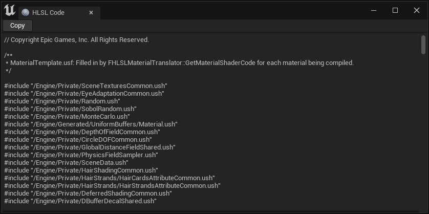
The exact checkout adds a useful aid: r.MaterialEditor.PreshaderDumpToHLSL is declared with a default of true and appends preshader expressions and parameter-reference information as comments in the HLSL source window. This can help verify whether the supposedly uniform part of the example actually ended up in the expected representation. A source comment is evidence about generated material output, not a measurement of its runtime cost. MaterialShared.cpp: preshader information in the HLSL window
For a backend compile failure, the more useful artifact is often the preprocessed shader for the exact failing job. The inspected r.DumpShaderDebugInfo definition documents modes for all compiled shaders, errors, or errors and warnings, with output under the project's Saved/ShaderDebugInfo location. Debug output is platform-dependent but usually includes preprocessed source. Configure the diagnostic before requesting the compilation you intend to inspect; having a cache hit instead of a fresh failing job can explain why no new dump appears. ShaderCompiler.cpp: shader debug output modes
Do not read a generated Local17 as though it were a stable public API name. Such temporaries are artifacts of a particular translation. Instead, locate the operation and trace its dependencies. For the example, find the texture sample using scaled coordinates, the tint multiplication, and the roughness expression. Compare dry and wet specializations under the same platform and pass context. If the material-generated source is correct but backend compilation produces an unexpected result, the reduced example gives a much stronger bug report than a screenshot of a large graph.
Custom expressions add ordinary programming hazards to material-specific ones. A variable must be in scope where it is used. A texture sample needs valid coordinates and a sampling mode appropriate to the stage. Derivatives inside nonuniform control flow require particular care because neighboring invocations may not execute the same path. Explicit mip levels or gradients are tools with visual consequences; choosing them merely to silence a compiler error can create aliasing or blurred textures. Keep the operation's footprint and evaluation context visible while debugging.
World Position Offset failures need geometry evidence as well as shader evidence. A displaced surface can leave its original bounds and be culled too early. A shadow can disagree if its path does not evaluate compatible displacement. Motion vectors can be wrong if previous-frame displacement or parameters do not represent the prior shape. The material compiler's previous-time context is part of this story, but so are scene bounds and renderer history. A successful HLSL compile only proves that the program is legal for its target, not that the surrounding scene data describes its motion correctly.
Finally, inspect the correct renderer output. A good main-view result does not validate a Lumen capture, a ray-hit material, a masked shadow, or a Nanite programmable raster path. Use the relevant viewport visualization or GPU capture to isolate that consumer. Each additional view tests a different contract the material promised to satisfy. That is more productive than repeatedly changing the same Base Color expression while the actual problem is missing geometry, stale history, or an unsupported secondary representation.
Measure the work the material causes, not the size of its graph
An instruction count is useful because it gives a reproducible signal for a particular compiled shader. It is not a complete cost model. Two shaders with similar reported instruction counts can behave differently because of texture access, register pressure, occupancy, branching, sample coverage, cache locality, and the number of times each program executes. A ten-instruction change evaluated on a few thousand vertices has a different significance from the same change evaluated on millions of overlapping pixels.
For the stone example, increasing the number of texture samples can increase memory traffic and sampling work. Increasing the resolution of a texture changes streaming and cache behavior even if the graph contains the same sample node. Sampling a texture with chaotic coordinates can lose locality. Using several unique material instances can increase update and binding work. None of those effects is reliably predicted by counting the rectangles on the editor canvas.
Begin with the question the measurement should answer. To compare two implementations of the wet roughness expression, hold the camera, geometry, resolution, renderer settings, textures, and material coverage constant. Allow transient compilation and streaming to settle. Measure the relevant GPU pass over repeated frames, and compare representative scenes rather than a preview sphere alone. Then inspect generated code and compiler statistics to explain the observed change. Code inspection supports the measurement; it should not replace it.
A preview sphere is particularly easy to misread. It has a convenient UV layout, little overdraw, one primary material, and a simple viewing arrangement. The production use might place the material on densely layered foliage, thousands of instances, or a large surface covering the screen. A masked material can perform texture work during coverage evaluation and still discard many samples. A translucent material can shade several layers at one pixel. A material that is inexpensive on the sphere can dominate a real scene because its invocation count is radically different.
Static features should be evaluated on two budgets. One budget is runtime execution: removing a branch or resource can make a specialization cheaper. The other is development and distribution: additional permutations consume compile time, cache storage, cook time, and potentially packaged shader code and pipeline preparation. An optimization that saves a small amount of GPU work while creating a large, mostly unused variant family may be a poor project-wide tradeoff. The right answer depends on how often the specialization is used and how expensive its removed work actually is.
Dynamic parameter updates also have a budget. Changing one shared rain parameter and rebuilding the necessary uniform data is different from issuing thousands of redundant updates with unchanged values. Updates can trigger cache invalidation, render commands, uniform-buffer work, and renderer-specific history invalidation. If gameplay code writes the same Tint value every tick, the shader might remain fast while CPU-side material management becomes wasteful. Profile the update path as well as the final draw.
For Nanite materials, separate visibility-affecting features from surface shading. If turning off World Position Offset substantially changes the rasterization cost, optimizing Base Color arithmetic may not address the dominant work. If the shading cost grows with many small bins and material variations, reducing an isolated multiply may have little impact on the scheduling overhead. The renderer's work organization is part of the performance model. This is why the compiler produces usage metadata and why runtime grouping matters alongside shader arithmetic.
Precision decisions need the same discipline. Lower precision may reduce cost or storage on a target that benefits from it, but numerical error can be visible in world-space calculations, repeated UV transforms, or sensitive normal computations. The material compiler and platform environment contain precision choices, including uniform-buffer handling. Do not assume that writing a shorter type name guarantees lower-precision execution on every backend, or that an apparently harmless change is safe for every scale in the scene.
A useful final report for an optimization therefore names the target and shader context, the measured pass-time change, the test scene and resolution, the relevant visual comparison, and any effect on compile variants or data updates. That evidence allows another engineer to decide whether the change applies to their scene. “Fewer instructions” is a hypothesis about one component of cost; a controlled measurement turns it into an engineering result.
Use the boundaries to design Arda's material compiler
Arda does not need to reproduce every historical Unreal class to learn from this pipeline. The transferable architecture is a set of explicit transformations with stable contracts. Begin with an authored material program that has typed inputs, resource references, parameters, and named surface outputs. Keep that representation independent of editor widget positions. A visual graph, a textual form, and an importer can then describe the same program without each owning a separate runtime shader system.
The first compiler representation should preserve semantic information that plain HLSL strings would lose: type, coordinate-space assumptions where relevant, shader-stage availability, derivative requirements, uniformity, resource type, and source location for diagnostics. A node for sampling a two-dimensional texture should name its coordinate and footprint behavior. A node producing displacement should be identifiable as a position-affecting output. These facts enable validation before the backend returns an opaque error in generated source.
Follow with explicit specialization. Bind static feature choices, target capabilities, and the requested output contract, then eliminate unreachable work and validate what remains. Keep runtime values such as Tint out of that specialization key. If four Boolean features create sixteen possible variants, record which variants are actually requested and why. A compiler should be able to explain which dependency caused a variant to exist instead of making shader counts an unexplained side effect of asset loading.
Partition uniform work before losing the graph's meaning. A small engine-side evaluator can produce the uniform values needed by the selected program, with clear invalidation dependencies. The stone's Tint × Brightness is a good first test. The UV-scaled texture sample is a good negative test because its result varies across the surface. The output should be a defined parameter layout plus the code needed for varying evaluation. That pair becomes an interface artifact, with its own version and hash.
Geometry adaptation should be a separate interface. A static mesh, skinned mesh, and future GPU-generated geometry path should each be able to provide agreed material inputs. Pass specialization should also be separate: depth coverage, surface shading, velocity, and secondary capture request different outputs and contexts. The material compiler can then target a small number of meaningful contracts rather than embedding branches for every scene object class in each node implementation.
The runtime needs stable identities for the material definition, compiled specialization, parameter instance, and pipeline configuration. Those identities should not be one overloaded handle. A parameter instance can change while its compiled specialization remains valid. A render-target format can change while its material graph remains unchanged. A new shader backend can rebuild executable code while preserving the authored material asset. Separating the identities makes each invalidation precise and prevents unrelated edits from triggering whole-system recompilation.
Asynchronous compilation should return immutable, versioned results. A pending job carries the identity of the inputs it compiled. A completed result is installed only where that identity is still wanted. Rendering can continue with an explicit fallback or an older compatible result under a documented policy. Parameter data should cross thread boundaries through a controlled update path and retain a layout compatibility check. These rules are more valuable early in engine development than a large collection of visual nodes, because they prevent subtle lifetime and stale-result failures.
Keep shader compilation and pipeline creation observable as separate services. An interface artifact can contain generated code, reflected resource requirements, diagnostics, and dependency hashes. A backend artifact can contain the target shader binary and binding metadata. A pipeline artifact can combine those shaders with the required render state. Each service gets an appropriate cache key, and telemetry reports its misses independently. This creates a system that can answer why a material is waiting, why it recompiles, and why its first draw is expensive.
A staged implementation can begin with the exact stone graph used here: scalar/vector constants and parameters, UV input, multiply, texture sampling, normal interpretation, Base Color and roughness outputs, one static switch, and a conventional opaque pass. Validate the whole path through actual rendering before expanding the node vocabulary. Add a dynamic tint update, a second geometry adapter, a depth/coverage specialization, a cooked cache reload, and a deliberately stale compile result. These tests exercise architectural boundaries that a hundred isolated arithmetic nodes would not.
Later features can extend those contracts deliberately. Layered scattering adds a richer surface representation. A GPU-driven geometry renderer adds new evaluation and grouping contexts. A real-time GI system adds cache-friendly or ray-hit material consumers. Their existence should not require redefining what a parameter instance is or allowing a renderer to crawl editor objects during a draw. The small stone material has already shown the essential path: an authored program becomes a typed computation, a specialized interface, compiled shader code, bound runtime data, and finally an evaluated surface. An extensible implementation makes each transition explicit enough to inspect, cache, and change without losing the meaning of the material.